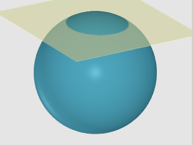

Thinking In Space
The motivation behind the HTM is to organize objects distributed on a surface of a sphere well.
We want to maintain much information
about the relative position of things, preserve the topology of the sphere and have a way of
"indexing" these objects so that they can be stored and retrieved in an orderly manner and with a great deal of
efficiency.
These pages introduce the concepts behind organizing regions of interest and
other spatial constructs, and show you how to formulate HTM queries with them.
You will also
learn how to use these spatial constructs in your programs
as well as database queries using SQL with the necessary extensions you can find here too.
• Halfspaces, Convexes and Regions
• HTM
Converting between location and HTM
Covermap of a Region
• How to use covermaps for spatial queries
The Region, as defined below, represents an area on the sphere.
The area may contain one or more connected components. A Region must have a finite area, therefore,
we do not consider a single or any finite (greater than zero) number of points a Region. A Region with
no points in it has an area equal to zero, and is called the Null Region. Regions
are the result of making unions of Convexes, and the Convex is the Intersection of a
number of Halfspaces. Halfspace is the basic building block of every area. The rest
of this primer is about this.
The halfspace is the basic building block of
Convexes
and
Region.
We get one by cutting though a unit sphere
with a plane. The plane may or may not slice through the middle of the
sphere. In any case, unless the plane entirely misses the sphere,
two regions, or two spherical caps of different sizes result.
We pick one of these by associating it with the orientation of the plane,
that is, the direction of the plane's surface normal.
In the diagram below, the smaller cap is
obtained by a plane whose surface normal points up, and is moved about
+0.8 units along this direction.
|

|
|
 |
| Figure 1a. Two Halfspaces |
|
Figure 1b. Depiction of the "top" Halfspace
{(0, 0, 1), 0.85}
|
The other, larger bottom portion is cut by a plane, whose surface
normal points down and is moved -0.8 units along the surface normal.
The negative number indicates that the shifting is in the opposite direction
of the surface normal. Without arrows or some visual
indication of the orientation of the planes, they seem identical, as in Figure
1.a. Figure 1b demonstrates how this tutorial depicts halfspaces.
The halfspace in question will be white or blank, and colors applied to
the part of the sphere that is subtracted, that is not considered
as part of the halfspace.
This is done for practical considerations, because the intersection of many
halfspaces will stay white where the parts that are not in the intersection
will be filled with potentially many colors. Take a look at the
Samples.
A simple search cone is the intersection of the cone with the unit sphere,
which is also defined by a plane slicing off the part of the sphere
that lies within the cone. If the cutting plane is one unit away from the
origin in the direction of the surface normal
then it slices off nothing, but merely touches the sphere.
So, the area associated with this special case is null. The whole sphere is
obtained if the cutting plane is moved a distance of -1, that is 1 in the
direction opposite to the surface normal.
The specification of a halfspace therefore consists of a direction
(x, y, z) and an offset -1 <= D <= +1.
Since the order in a tuple is significant, we simply denote the halfspace
h
as a 4-tuple:
h = (x, y, z, D)
A Convex is the intersection of any finite number
of Halfspaces. Most simple shapes,
like spherical polygons, rectangles are convexes.
The specification of a convex consists of a list of halfspaces:
c = {h1, h2, ... ,hn}
A Region is any area on the surface of a sphere. It can be zero, one or more
contiguous "areas", that is, several connected components.
For mathematical consistency, the region has either a finite area,
or it is empty. Therefore, a single point is
equivalent to an empty region, no matter what the meaning of the word
is is. As you will see, a region can be any shape you can think
of on the sphere. Its simplest form is the inside of a circle on
the surface of a sphere. Examples of more complex shapes are polygons,
rectangles bracketed by lines of latitude and longitude, a band circumscribing
the whole sphere, which is not technically a spherical polygon.
Simply put, a Region is a (set theoretical) union of a number
(including 0) of Convexes.
The specification of a region consists of a list of convexes
r = {c1, c2, ... ,cn}
In our code samples we will always operate on
regions.
Most of us would rather think in terms of spherical polygons, circles and rectangles,
rather than unions of convexes.
For this reason, there is a mechanism that allows a user to specify a region
in terms of familiar shapes.
There is a simple text-based language, which is easy to read and edit by humans.
The application programmer would use a class of objects called a Parser that takes
a string that describes the region, and produces a
Region object.
The details of the language and its grammar are found here.
The Examples below will include C# code for generating regions using Region, Convex and Halfspace
objects as well as the text description.
The notion of Regions, Convexes and Halfspaces is best illustrated with
graphics examples and sample code using the API. All examples will have
two parts, where the first one deals with Region, Convex and Halfspace
in their pure form. The second part addresses operations relating to HTMs.
On first reading, you can skip
the HTM parts and revisit the samples after you have familiarized yourself
with HTM.
Example: Circle (aka "search-cone")
This is a very simple region consisting of a single convex of one halfspace.
For most users, a circular search area is best described by the center
and radius rather than an offset of the cutting plane.
Example: Band
To get a band or ring around the globe, take the intersection of two overlapping halfspaces.
This is a simple box consisting of ra/dec (or lat/lon) limits.
lines of equal declination (latitude) are (generally) small circles parallel
to the equator. The equal lines of right ascension (longitude) are meridiens,
which are great circles. The four halfspaces defined by these circles
are oriented so that they "trap" the rectangular region of interest. This
is nothing more than the intersection of four halfspaces, therefore it can
be represented as a single convex.
The convex polygon is made up of great circle segments of various lengths.
Each great circle defines a halfspace, and they are oriented so, that they
"trap" the region of interest in a fashion similar to the rectangle.
The Spherical.HTM library, package or assembly has all the C# classes
that let you create and manipulate regions and covermaps. See the
API for the full online documentation
These functions are made available to SQL Server 2005 through extensions described in
TBD
Last update May 29, 2007 György Fekete version 3.1.2